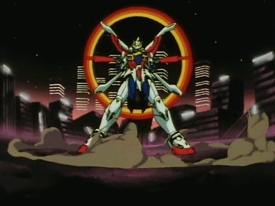
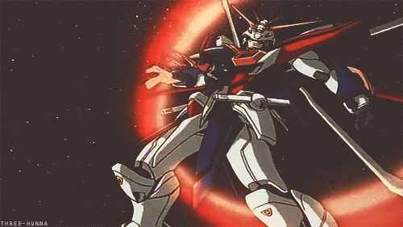
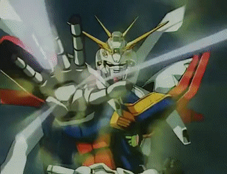

God Gundam
More Info
One of the more unique Gundam series would also find its way into popularity as well as controversy. God Gundam, also dubbed the Shining Gundam, makes its protaganist Domon Kasshu use it in fights less for war and more for tournaments between countries, God Gundam representing Japan. This suit would be used in the final fight to defeat Domons brother who weilded the "Devil" Gundam, or Dark Gundam.